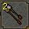
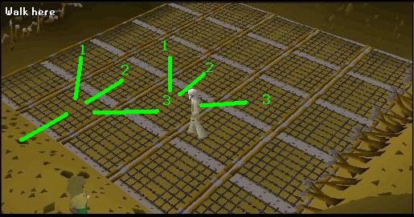
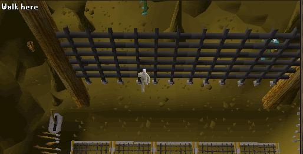
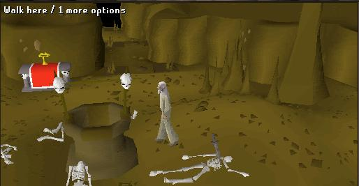
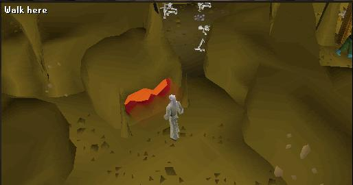
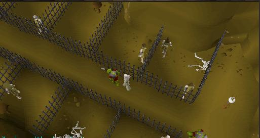
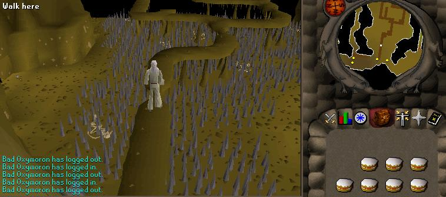
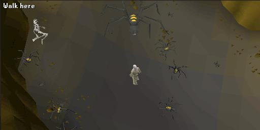
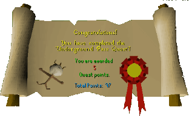

Underground Pass
Description: The Underground Pass, sealed for thousands of years, has now been reopened to reveal a complex labyrinth of tunnels and chasms. You must find a way through, and get one step closer to the evil King Tyras. But the road is long and it could be lonely. When fatigue starts to take it's toll, mental strength is what you'll need...Difficulty: Experienced
Length: Long
Required Quests:
- Biohazard
- Plague City
Items & Skills Needed:
- 25 Ranged
- The ability to defeat three level 91 demons (safespottable)
Recommended:
- 79 Combat
- 50 Agility to have a better success rate on agility checks
- 50 Thieving to access a shortcut
- 43 Prayer for Protect from Melee
- Decent magic armor & spells
Reward: 5 Quest points, 3,000 Agility XP, 3,000 Attack XP, Staff of Iban, the ability to use Iban Blast
Instructions:
Start by talking to King Lathas, who is on the 2nd floor of the Paladin Tower in Ardougne. Accept the quest to find a way through the underground pass. He will tell you a scout, named Koftik, will meet you at the entrance in West Ardougne.
Head to West Ardounge. You should find Koftik in the north-west corner near a cave entrance. Talk to him and then enter the cave.
First Level
Upon entry, you find two paths to avoid the swamp in the middle. If you brought extra ropes, you can use one on a stalactite to the north, or you can take the Agility route by climbing over the rockslides to the south. I recommend climbing the rockslides, as you will need ropes later.
Note: You will need two inventory spots for this next step. If you wish to keep as much food with you as possible, you may drop two food items at the edge in the north-west corner before the bridge that you will telekinetic grab later when you cross to the other side, NOT behind the fence.
Talk to Koftik again, who will give you a cloth he found. Use the cloth on an arrow you brought. You can do this multiple times in case you fail. Koftik can give you multiple cloths. Use these arrows on the fire nearby to set them alight.

Now, go around the cliff to the north, and you should be behind a fence. Try shooting at the guide ropes that hold the bridge up. When you hit it, you are automatically taken across it. Positioning is critical when shooting at the ropes; you should stand at the center of the fence's length.
If you dropped your food earlier to telegrab, telekinetic grab the food you dropped before they despawn.
Head north and pick up the plank that is guarded by blessed spiders, then head south and follow the path.
You should find a gap with a pole-shaped rock above it. If you have a low agility level, you may fail this part multiple times and lose your rope. Try and use your rope on the rock to get across.
Follow the path and go down the small alley climbing over a rockslide. After you climb it there should be another to the west that you should climb as well.
Follow the path climbing over two rockslides until you meet up with Koftik again. Talk to him, and you will find that he is slowly being possessed.
Here is the 5x5 grid. It is basically a game of process of elimination and a memory game. Each safe path to cross is different for each account.
Find the "square" you can stand on in the first row. Once you find that, then the next one can branch out to any tile adjacent.
Continue this process until you find a safe path across. If you fall, climb back up on protruding rocks or you will continue to receive hits.

NOTE: If you plan to do the Regicide quest in the future, it's best to keep your character's path noted.
Once across, pull the lever to the south, and the portcullis should open; you will automatically walk through.

Follow the path to where the zombies are and a furnace to the north.
Before entering the west alley, look on both sides of the walls until you see the multiple odd markings on either side. These are the traps. You can either search them and disarm them with high thieving, or skip them by performing the running skip. To perform a running skip, stop your character right before the trap, then click the tile right after the trap. The game does not register your character on the trap tile, just the tiles adjacent to it.
When you have cleared all the wall traps, there should be a well and a skeleton you can search for an old journal in the middle of the room. Read to learn more about what we are doing next.

Go up the north road and notice there are flat rocks on the floor, use the plank on the flat rocks to cross until you get to the the orb of light. Pick it up, then return to the well.
The west path is the same as the north path. Use your plank on the flat rocks pick the orb of light up and return to the well.
Turn on Protect from melee, if you wish, and run into the northwest path. Pick up the Orb of Light and return to the well.
The south west path is a thieving check, search the flat stone under the orb. When you try to pick it up, you'll be asked whether you want to disarm it. If you fail, you will be damaged by a swinging log. If you succeed, you should now have all 4 orbs. Return back to the well.
Avoiding the wall traps again, make your way to the furnace to the east with the zombies. Use all the orbs with the furnace, destroying them.

Avoiding the wall traps, return to the well. Pray at the altar if you need to, then climb down the well to the next level.
Second Level
Search the crates nearby; one will contain some food.
Now run west to the cages. Pick the lock on the southeast cage, then use the spade on the mud to get through a tunnel.

Head west and cross the ledge past the giant rats to reach another difficult part. If you fail to cross this ledge, go north and east back to the cages. Repeat the previous step to get back to the ledge.
If you are a level 50+ Thieving, then run all the way south and picklock the two gates to get across. If you're not good at Thieving like me, follow the correct path to get to the east side of the map. There are 3 intersections you will find. First intersection go south, second go north, third go north. You should end up on the east side.

Follow the path south and go through the obstacle pipe.
Search the Unicorn Cage for a railing. Go around south to where the boulder is.
Use the Railing Pipe to push the boulder down the hill. You can discard the pipe now.
Go back to the unicorn cage and search it for the unicorn horn. Keep it on you for the next well.
Enter the north tunnel. Continue north past the Zombies until you find 3 Paladins.
Talk to Carl the Paladin, he gives you food and a prayer potion. Then slaughter all of the paladins for Crests. Keep track of which Paladins you have already killed as they respawn. Each Crest is also in different colors. Be aware, if you don't bring 3 different crests to the well, it won't unlock the door.
Protip: To safe spot the Paladins with magic, attack them, then run west into the tunnel out of their wander radius. Lure them to the west side of the south stalagmite. They will try to pull you into their wander radius, but can't due to the stalagmite.
Once you have all 3 different Crests and the Unicorn horn, continue down the west path and use the skip run method or plank on the flat rock to safely cross it.
Use the Unicorn Horn and 3 Crests on the well. You should get game dialogue saying the door has unlocked. Go through the door. (Note: this is the well you use your iban staff on to recharge it once you have finished the quest and have used all the charges)
Third Level
Walk along the east edge of the cave until you get to the south hole in the wall with the stairs. Go down the stairs.
Go west along the fence and find three dwarves there, Niloof, Klank, and Kamen. Speak to Niloof, who will tell you about the witch above. He will also provide you with 2 pies and 2 pizzas. Now that you know about the witch, you can help find her cat. IF YOU DON'T DO THIS STEP, YOU CAN'T PICK UP THE CAT!
Anytime you fall on the agility checks above, you may lose 20 hitpoints and will end up just north of the stairs. You can always visit the dwarves if you wish, as Kamen can offer you food. Be aware, he also offers you a dwarf's brew, which can decrease your agility level by 4.
Go back to where you came from, to the south stairs, and climb up. Once up on the ledge again, go east from the stairs, then north. Once you reach your first bridge to the west, complete your first agility check and jump over the gap.
The Witch's house is just south of you. If you knock on the door or search the window, you realize she is searching for her cat. The cat is nearby on the ledges. Go back north onto the bridge, going west, and complete the agility check again. Now go north west until you find a black cat. Pick it up.
Go back to the witch's hut and use the cat on the door. The witch will be distracted now that her cat has returned. You can enter and search the chest just inside for the doll of Iban, the history of Iban book, super attack potion, and a restore potion. Leave the house.
Iban's Tomb
You must now complete the ritual explained in the book again to defeat Iban. You can gather all four items in any order you wish.Iban's Shadow
From the witch's house, you can see demons just west. Find your way there and kill each of them to collect the amulets they drop. You can safespot each one by staying on the bridge, not entering their platform. The last demon requires an agility check, but if you have telekinetic runes, you can kill and telekinetic grab the amulet it drops, avoiding the agility check.
Open the nearby Chest for Iban's Shadow. Use it on the Doll.
Iban's Body
Go back to the dwarves and talk to Klank and Kamen. You will receive Klank's Gauntlets and a tinderbox.
Take the Bucket spawn in the west house. Now go to the east house, use bucket on the barrel to empty the barrel for Dwarf Brew.
Go far south-east in this area to reach Iban's tomb. Use the Dwarf Brew on it, then set it on fire with a tinderbox. You will automatically find Iban's ashes. Use it on the Doll. You can now drop your Tinderbox and bucket.
Iban's Blood
Head to the northeast part of the map to where all the spiders are. Protect from Melee if you wish and Kill the huge spider to get Iban's blood. BEWARE, once you kill the big spider, all the smaller ones will become aggressive. Use the blood on the doll.

Iban's Dove
Wear Klank's Gauntlets for the next part to avoid getting bitten by the soulless.
Go upstairs, back to the cave with all the bridge platforms. Make your way to the west edge, going north. You will find 16 soulless in cages in the north-west corner.
Search each Cage until you find the Dove. Each Cage you search the soulless will try to bite you, but if you are wearing Klank's Gauntlet's you will avoid all damage.
Note: When looking for the dove, remember there are two cage sections—one in the northwestern corner and another slightly farther south.
Final Battle
Head to the middle of the maze; from the soulless, take the bridges south. Kill an Iban Disciple for Zamorak Robes. You must only have a Zamorak robe top and bottom equipped to go inside.
You can now drop all quest materials to make space, except for the doll. Make sure you have two empty inventory slots and are at full health. All you need are your valuables, the doll, food, and a teleport out.
Search the doll to make sure you have completed the ritual and smeared all 4 items of iban on it.
Note that the left click on the doll is Search. This interrupts your actions. Be ready to right-click the doll to use it! The blast spells inside the room also stun and damage you.
Run towards the well, hopefully dodging the shots, and right click USE DOLL on WELL. Iban will die. Stay there after throwing the doll; it will take a little while for the blasts to stop.
Once completed, Iban will be banished from Gelinor. You will be given 15 death runes and 30 fire runes, and the Staff of Iban from looting the body.
You will be flung into a part of the underground pass. Either Teleport to Ardounge or talk to the scout again, and he'll take you outside. Speak to the King and inform him you made it through.
Congratulations, Quest Complete!

This quest guide was written by Swaty and quackmann. Thanks to Stormer, jimfromtx, ImaGasLT, jfta0007, u gone lol, einsteinman, Master242424, martori, and Fran 2004 for corrections.
This quest guide was entered into the database on Mon, Apr 19, 2004, at 08:03:18 PM by DRAVAN and CJH and was last updated on Tue, Sep 09, 2025, at 05:07:34 AM by Fran 2004.